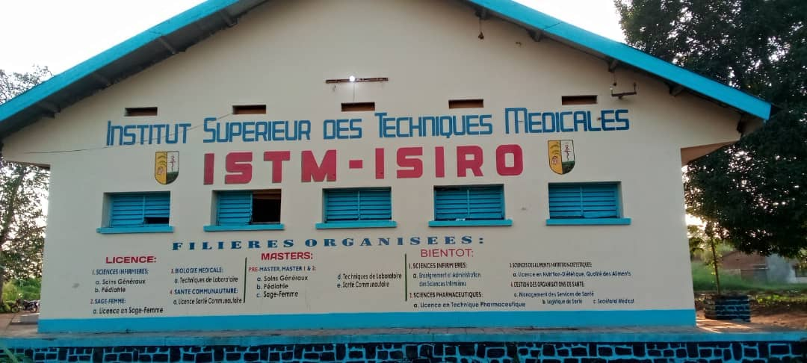

ISTM-ISIRO PARALYSÉ : 9 Semaines de Grève et les 5 Conséquences sur les Étudiants
Publié le 09/08/2026 - Par Sylvain Young

La situation actuelle
Depuis le 23/05/2026, l'Institut Supérieur des Techniques Médicales d'Isiro ISTM est à l'arrêt total. Plus de 9 semaines sans activité académique.
La cause de la grève :
Les enseignants dénoncent la mauvaise gestion et la non collaboration du comité de gestion envers ses subalternes. Jusqu'à nos jours, aucune solution n'a été trouvée.
Les efforts des étudiants :
Malgré nos efforts pour sauver l'année académique, nous sommes allés jusqu'au gouvernorat déposer un mémorandum. Mais rien. Silence total.
"9 semaines sans cours est une peine attribuée et cela fait mal au cœur"
Les 5 conséquences qui détruisent notre avenir
1. Perte d'une année académique
Avec déjà 9 semaines perdues, le calendrier est foutu. On risque de reprendre à zéro en 2027.
2. Retard dans les stages
En Sciences Infirmières, Labo et Sage-Femme on a besoin des hôpitaux. Sans cours = sans stage = sans expérience pour soigner demain.
3. Problèmes d'argent
Les parents continuent de payer loyer et nourriture à Isiro alors qu'il n'y a pas cours. Double peine pour les familles.
4. Découragement total
Rester à la maison pendant que les autres avancent... Beaucoup d'étudiants pensent à abandonner.
5. Avenir du Haut-Uélé en danger
On forme les futurs infirmiers et sages-femmes d'Isiro. Si on rate cette année, c'est tout le système de santé qui va souffrir.
Notre appel
Nous demandons aux autorités provinciales et au comité de gestion de trouver URGENT une solution. On ne veut pas sacrifier notre avenir.
Et toi étudiant de l'ISTM, quelle conséquence vis-tu le plus ? Laisse ton témoignage en commentaire 👇 On doit se faire entendre.
#ISTMIsiro #GreveISTM #SauverLAnnee #EtudiantsHautUele #Isiro2026